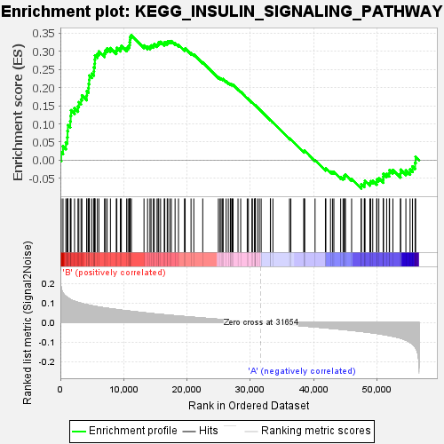
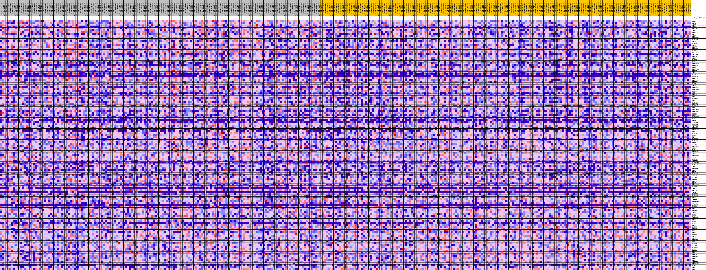
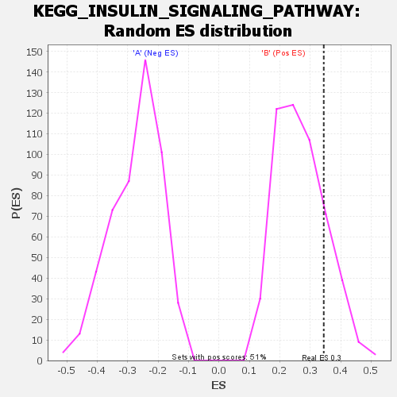

| | | Dataset | my.my.cls#B_versus_A.my.cls#B_versus_A_repos |
| Phenotype | my.cls#B_versus_A_repos |
| Upregulated in class | B |
| GeneSet | KEGG_INSULIN_SIGNALING_PATHWAY |
| Enrichment Score (ES) | 0.34442395 |
| Normalized Enrichment Score (NES) | 1.2828602 |
| Nominal p-value | 0.19009902 |
| FDR q-value | 0.47064885 |
| FWER p-Value | 0.943 |
Table: GSEA Results Summary

Fig 1: Enrichment plot: KEGG_INSULIN_SIGNALING_PATHWAY
Profile of the Running ES Score & Positions of GeneSet Members on the Rank Ordered List
| SYMBOL | TITLE | RANK IN GENE LIST | RANK METRIC SCORE | RUNNING ES | CORE ENRICHMENT | | 1 | ELK1 | na | 125 | 0.176 | 0.0224 | Yes |
| 2 | RHOQ | na | 412 | 0.150 | 0.0384 | Yes |
| 3 | AKT2 | na | 864 | 0.133 | 0.0491 | Yes |
| 4 | SHC3 | na | 1085 | 0.128 | 0.0632 | Yes |
| 5 | FLOT1 | na | 1128 | 0.127 | 0.0803 | Yes |
| 6 | IRS1 | na | 1188 | 0.125 | 0.0969 | Yes |
| 7 | RHEB | na | 1554 | 0.119 | 0.1070 | Yes |
| 8 | HK3 | na | 1625 | 0.117 | 0.1223 | Yes |
| 9 | CRKL | na | 1679 | 0.116 | 0.1376 | Yes |
| 10 | PRKAR1A | na | 2235 | 0.109 | 0.1431 | Yes |
| 11 | PIK3R1 | na | 2777 | 0.103 | 0.1479 | Yes |
| 12 | SHC4 | na | 2915 | 0.101 | 0.1597 | Yes |
| 13 | PTPN1 | na | 3258 | 0.098 | 0.1675 | Yes |
| 14 | SHC2 | na | 3400 | 0.097 | 0.1786 | Yes |
| 15 | PDE3B | na | 4154 | 0.091 | 0.1781 | Yes |
| 16 | PRKACA | na | 4181 | 0.091 | 0.1904 | Yes |
| 17 | CALM2 | na | 4437 | 0.089 | 0.1984 | Yes |
| 18 | EXOC7 | na | 4461 | 0.089 | 0.2105 | Yes |
| 19 | SLC2A4 | na | 4543 | 0.089 | 0.2216 | Yes |
| 20 | PHKG1 | na | 4586 | 0.088 | 0.2332 | Yes |
| 21 | SHC1 | na | 4962 | 0.086 | 0.2386 | Yes |
| 22 | MAPK1 | na | 5290 | 0.084 | 0.2446 | Yes |
| 23 | PYGL | na | 5307 | 0.084 | 0.2561 | Yes |
| 24 | PRKAR2B | na | 5415 | 0.083 | 0.2659 | Yes |
| 25 | PRKAG3 | na | 5442 | 0.083 | 0.2771 | Yes |
| 26 | PRKX | na | 5463 | 0.083 | 0.2884 | Yes |
| 27 | PPP1R3D | na | 5836 | 0.081 | 0.2931 | Yes |
| 28 | PHKA2 | na | 6079 | 0.079 | 0.3000 | Yes |
| 29 | AKT3 | na | 6968 | 0.075 | 0.2948 | Yes |
| 30 | PYGM | na | 7119 | 0.074 | 0.3025 | Yes |
| 31 | CALML5 | na | 7383 | 0.073 | 0.3081 | Yes |
| 32 | PPP1CB | na | 7901 | 0.071 | 0.3089 | Yes |
| 33 | PRKACB | na | 8823 | 0.067 | 0.3020 | Yes |
| 34 | FLOT2 | na | 8916 | 0.066 | 0.3096 | Yes |
| 35 | RAF1 | na | 9467 | 0.064 | 0.3089 | Yes |
| 36 | ARAF | na | 9623 | 0.063 | 0.3150 | Yes |
| 37 | PRKAA2 | na | 10461 | 0.060 | 0.3086 | Yes |
| 38 | RAPGEF1 | na | 10678 | 0.059 | 0.3131 | Yes |
| 39 | MAPK8 | na | 10898 | 0.058 | 0.3174 | Yes |
| 40 | GCK | na | 10941 | 0.058 | 0.3249 | Yes |
| 41 | SH2B2 | na | 10997 | 0.058 | 0.3320 | Yes |
| 42 | GRB2 | na | 11019 | 0.058 | 0.3398 | Yes |
| 43 | MAPK10 | na | 11212 | 0.057 | 0.3444 | Yes |
| 44 | CBL | na | 13204 | 0.050 | 0.3162 | No |
| 45 | PIK3R5 | na | 13767 | 0.048 | 0.3130 | No |
| 46 | PRKAG1 | na | 14147 | 0.047 | 0.3128 | No |
| 47 | CALML6 | na | 14318 | 0.046 | 0.3163 | No |
| 48 | PHKG2 | na | 14680 | 0.045 | 0.3162 | No |
| 49 | PPP1R3B | na | 14825 | 0.045 | 0.3199 | No |
| 50 | PPP1R3C | na | 15261 | 0.043 | 0.3183 | No |
| 51 | CALM3 | na | 15438 | 0.043 | 0.3211 | No |
| 52 | PDE3A | na | 15538 | 0.042 | 0.3253 | No |
| 53 | EIF4EBP1 | na | 15823 | 0.041 | 0.3261 | No |
| 54 | LIPE | na | 16397 | 0.040 | 0.3215 | No |
| 55 | PKLR | na | 16486 | 0.039 | 0.3255 | No |
| 56 | SORBS1 | na | 16870 | 0.038 | 0.3241 | No |
| 57 | MAP2K1 | na | 16959 | 0.038 | 0.3279 | No |
| 58 | TRIP10 | na | 17276 | 0.037 | 0.3275 | No |
| 59 | PRKACG | na | 17521 | 0.036 | 0.3283 | No |
| 60 | PPP1R3A | na | 18112 | 0.035 | 0.3227 | No |
| 61 | G6PC2 | na | 18648 | 0.033 | 0.3179 | No |
| 62 | FOXO1 | na | 19593 | 0.031 | 0.3055 | No |
| 63 | GSK3B | na | 19705 | 0.030 | 0.3078 | No |
| 64 | HK1 | na | 20630 | 0.028 | 0.2954 | No |
| 65 | PIK3CG | na | 21068 | 0.027 | 0.2914 | No |
| 66 | PIK3R3 | na | 22479 | 0.023 | 0.2696 | No |
| 67 | MKNK2 | na | 24947 | 0.017 | 0.2283 | No |
| 68 | SOCS2 | na | 25213 | 0.016 | 0.2258 | No |
| 69 | RPS6KB2 | na | 25385 | 0.015 | 0.2250 | No |
| 70 | SOS1 | na | 25614 | 0.015 | 0.2231 | No |
| 71 | BAD | na | 25699 | 0.015 | 0.2236 | No |
| 72 | PPP1CA | na | 26173 | 0.014 | 0.2172 | No |
| 73 | TSC1 | na | 26516 | 0.013 | 0.2129 | No |
| 74 | RPS6KB1 | na | 26836 | 0.012 | 0.2089 | No |
| 75 | TSC2 | na | 26849 | 0.012 | 0.2103 | No |
| 76 | MAP2K2 | na | 27050 | 0.011 | 0.2083 | No |
| 77 | INPP5D | na | 27129 | 0.011 | 0.2085 | No |
| 78 | EIF4E1B | na | 27268 | 0.011 | 0.2076 | No |
| 79 | PIK3CB | na | 28048 | 0.009 | 0.1950 | No |
| 80 | IRS2 | na | 28472 | 0.008 | 0.1886 | No |
| 81 | PRKAA1 | na | 29504 | 0.005 | 0.1711 | No |
| 82 | FBP2 | na | 29689 | 0.005 | 0.1685 | No |
| 83 | BRAF | na | 30251 | 0.003 | 0.1591 | No |
| 84 | PIK3CD | na | 30315 | 0.003 | 0.1584 | No |
| 85 | ACACB | na | 30628 | 0.002 | 0.1532 | No |
| 86 | SOCS1 | na | 30757 | 0.002 | 0.1513 | No |
| 87 | PHKA1 | na | 30764 | 0.002 | 0.1515 | No |
| 88 | PRKAG2 | na | 30775 | 0.002 | 0.1516 | No |
| 89 | HRAS | na | 31126 | 0.001 | 0.1455 | No |
| 90 | PPARGC1A | na | 31415 | 0.001 | 0.1405 | No |
| 91 | CALM1 | na | 31704 | -0.000 | 0.1355 | No |
| 92 | INS | na | 33154 | -0.004 | 0.1103 | No |
| 93 | RPTOR | na | 33178 | -0.004 | 0.1104 | No |
| 94 | IRS4 | na | 33558 | -0.005 | 0.1044 | No |
| 95 | PIK3R2 | na | 36180 | -0.011 | 0.0595 | No |
| 96 | PIK3CA | na | 36393 | -0.012 | 0.0574 | No |
| 97 | KRAS | na | 38448 | -0.017 | 0.0235 | No |
| 98 | IKBKB | na | 38457 | -0.017 | 0.0258 | No |
| 99 | PRKAR1B | na | 38587 | -0.018 | 0.0259 | No |
| 100 | SOCS3 | na | 40213 | -0.022 | 0.0003 | No |
| 101 | CALML3 | na | 41850 | -0.027 | -0.0250 | No |
| 102 | EIF4E | na | 41921 | -0.027 | -0.0225 | No |
| 103 | HK2 | na | 42656 | -0.029 | -0.0314 | No |
| 104 | PDPK1 | na | 42986 | -0.030 | -0.0330 | No |
| 105 | INSR | na | 43185 | -0.031 | -0.0322 | No |
| 106 | PCK2 | na | 44257 | -0.034 | -0.0464 | No |
| 107 | PYGB | na | 44635 | -0.035 | -0.0482 | No |
| 108 | INPP5K | na | 44844 | -0.036 | -0.0469 | No |
| 109 | NRAS | na | 44857 | -0.036 | -0.0421 | No |
| 110 | FASN | na | 45016 | -0.036 | -0.0398 | No |
| 111 | GYS2 | na | 45987 | -0.039 | -0.0515 | No |
| 112 | RPS6 | na | 47499 | -0.045 | -0.0719 | No |
| 113 | MAPK3 | na | 47515 | -0.045 | -0.0659 | No |
| 114 | MKNK1 | na | 47986 | -0.047 | -0.0677 | No |
| 115 | MTOR | na | 48030 | -0.047 | -0.0618 | No |
| 116 | FBP1 | na | 48105 | -0.047 | -0.0565 | No |
| 117 | MAPK9 | na | 48865 | -0.050 | -0.0629 | No |
| 118 | AKT1 | na | 48994 | -0.051 | -0.0580 | No |
| 119 | ACACA | na | 49323 | -0.052 | -0.0565 | No |
| 120 | PRKAB1 | na | 49939 | -0.055 | -0.0597 | No |
| 121 | SOS2 | na | 49991 | -0.055 | -0.0528 | No |
| 122 | PTPRF | na | 50288 | -0.057 | -0.0501 | No |
| 123 | SOCS4 | na | 50967 | -0.060 | -0.0536 | No |
| 124 | EIF4E2 | na | 50994 | -0.060 | -0.0456 | No |
| 125 | GYS1 | na | 51015 | -0.060 | -0.0375 | No |
| 126 | PRKCZ | na | 51519 | -0.063 | -0.0375 | No |
| 127 | PHKB | na | 51930 | -0.066 | -0.0355 | No |
| 128 | PRKCI | na | 51978 | -0.066 | -0.0271 | No |
| 129 | PRKAB2 | na | 52505 | -0.069 | -0.0267 | No |
| 130 | PPP1CC | na | 53699 | -0.079 | -0.0367 | No |
| 131 | CBLB | na | 53730 | -0.079 | -0.0261 | No |
| 132 | SREBF1 | na | 54556 | -0.089 | -0.0282 | No |
| 133 | PRKAR2A | na | 55218 | -0.101 | -0.0257 | No |
| 134 | PCK1 | na | 55603 | -0.110 | -0.0171 | No |
| 135 | CBLC | na | 56008 | -0.123 | -0.0070 | No |
| 136 | CRK | na | 56094 | -0.127 | 0.0093 | No |
Table: GSEA details [plain text format]

Fig 2: KEGG_INSULIN_SIGNALING_PATHWAY
Blue-Pink O' Gram in the Space of the Analyzed GeneSet

Fig 3: KEGG_INSULIN_SIGNALING_PATHWAY: Random ES distribution
Gene set null distribution of ES for KEGG_INSULIN_SIGNALING_PATHWAY